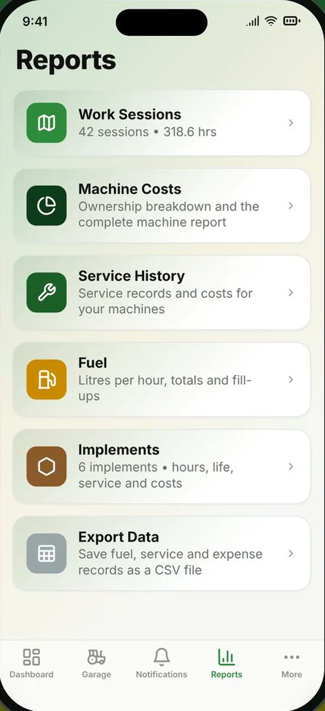
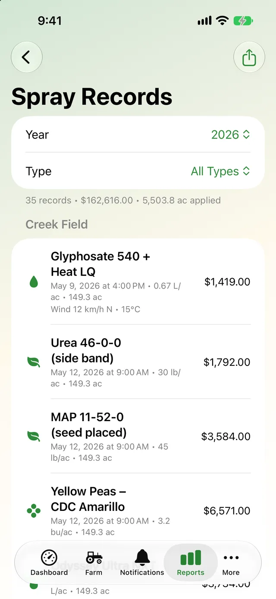
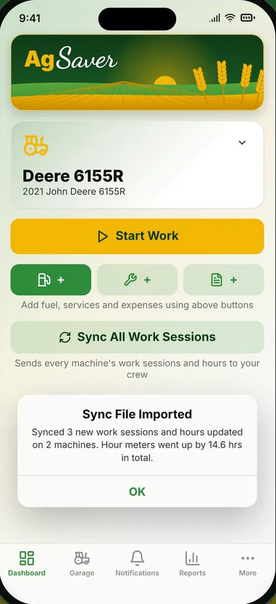
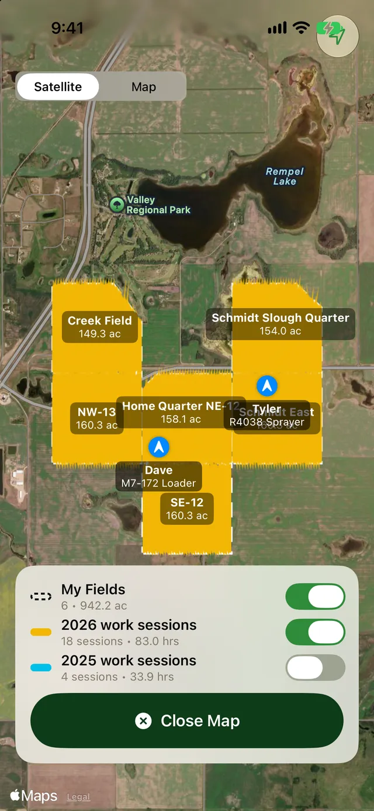
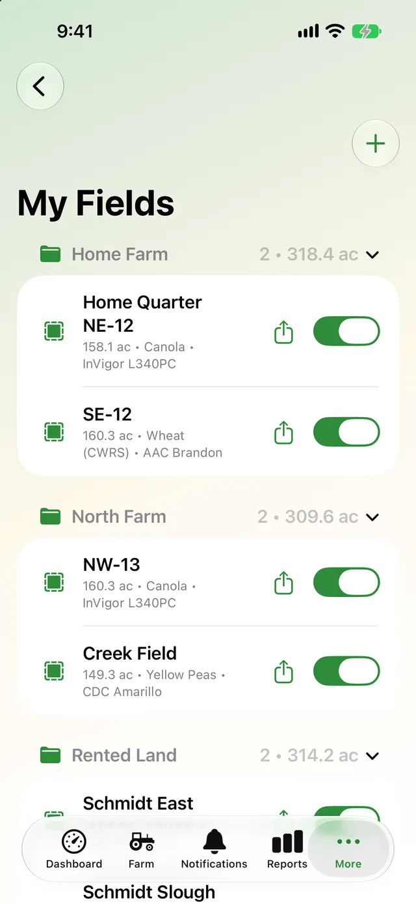

Reports for the whole farm
Pick a report, filter it by machine, implement, field or dates, and share it as a PDF. Every report is built from the records you already keep.
- Work sessions by machine or implement
- Total cost of ownership with a breakdown chart
- Fuel consumption and fuel cost
- Service history, implements, My Fields and spray records


Keep everyone's hours in one place
Send a sync file by Messages, AirDrop or email to everyone who runs your machines. When they open it, AgSaver adds any work sessions, service records and implements they don't have yet, and brings hour meters, implement hours and where each implement is installed up to date.
- One file, any way you like to send it
- Opening the same file twice never adds anything twice
- Works without anyone joining an account

See where everyone is working
Start a crew and send the code to the people who run your machines. While anyone in the crew is running a work session, their machine and the path they're working show on your work map and dashboard map, updated about every 30 seconds.
- Positions are only sent while a work session runs
- Only people with your crew code can see them
- Leave the crew any time to stop sharing

Your records, in files you can open anywhere
AgSaver syncs through your own private iCloud between your iPhone and iPad. Whenever you want a copy, export it: CSV for Excel or Numbers, or one zip with everything.
- Export Everything: database, machine photos, receipts, GPS paths as GPX and a spreadsheet
- Export Records: fuel, service and expenses as CSV
- Import a zip, backup or CSV, added to what you have
- Moving to a new phone? iCloud brings it all with you

Share what you need, keep the rest private
Nothing leaves your devices unless you send it.
Private iCloud sync
Your data syncs through your own iCloud, which only you can access. No AgSaver account needed.
Restore anywhere
Set up a new device and AgSaver finds your existing data, or import a backup or sync file.
PDF reports
Work, fuel, service, field and spray reports share as PDFs from the share sheet.
KML and GPX
Field boundaries export as KML and work paths as GPX for other mapping software.
Crew sharing is opt-in
Crew positions are off unless you start or join a crew, and stop when work stops.
CSV for spreadsheets
Fuel, service and expense records open straight in Excel or Numbers.
More of what AgSaver does
Put every hour and every acre to work.
AgSaver runs on iPhone, iPad and Apple Watch. Your records stay on your devices and your own iCloud.